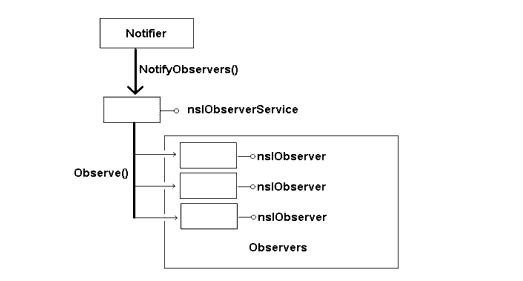
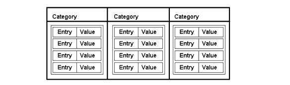
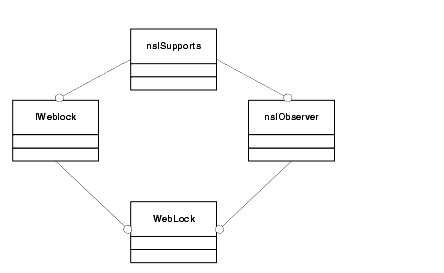
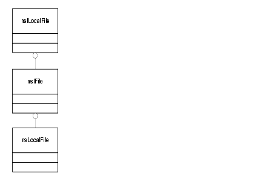
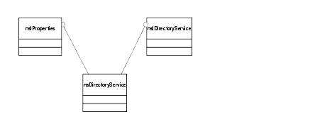

CHAPTER 6 Tutorial: Starting WebLock
In this chapter, we begin to design and implement the web locking functionality itself. We have already created a module that implements most of the generic component functionality (e.g,. registration). This chapter will focus on the functionality that actually handles the web locking.
Topics covered in this chapter:
- "Getting Called at Startup"
- "Providing Access to WebLock"
- "Creating the WebLock Programming Interface"
- "Defining the Weblock Interface in XPIDL"
- "Implementing WebLock"
Getting Called at Startup
No person is an island to themselves, and neither are components. The sample component you've built up so far doesn't do anything. After having its registration procedure called, the component does nothing.
In order to be started up or notified when some event happens, the sample component has to hook into Mozilla, which it can do either by overriding an existing component or by registering for some event that will cause it to start up. WebLock does the latter and gets called when a Gecko Profile Startup occurs. When a Gecko application starts up, registered components are created and notified via the general purpose observer interface nsIObserver.
Observers are objects that are notified when various events occur. Using them is a good way for objects to pass messages to each other without the objects having explicit knowledge of one another.
Usually, there is one object notifying a group of observers. For example, an object may be created and have its observe method called at startup, or it may register to be notified prior to XPCOM shutdown. The method at the core of this interface is observe:
There aren't really any restrictions on what the parameters of the observer method may be. These parameters are defined according to the event being observed. For example, in the case of the XPCOM shutdown observation, aSubject and aData are not defined, and aTopic is defined as the string "xpcom-shutdown". If your object would like to register for this or other events, it first must implement the nsIObserver interface. Once you do this, the observer service implementing nsIObserverService can notify your object of registered events by means of this interface, as in the figure below.

Figure 1. The Observer InterfacesThe above figure shows the observer service maintaining a list of all registered nsIObserver objects. When the notification is made the nsIObserverService broadcasts the notification from the caller of the NotifyObserver() to the nsIObserver object's Observe() method. This is a very useful decoupling of different objects. The nsIObserver is a generic interface for passing messages between two or more objects without defining a specific frozen interface, and its one of the ways in which extensibility is built into XPCOM.
The implementation of the nsIObserver interface in the WebLock component is similar to the implementation for the nsIFactory interface. Following Example 2, you change the class definition to support the nsIObserver interface and change NS_IMPL_ISUPPORTS1 so that the QueryInterface implementation knows that the component also supports nsIObserver. The WebLock class definition with support for start up observation is below.
class WebLock: public nsIObserver { public: WebLock(); virtual ~WebLock(); NS_DECL_ISUPPORTS NS_DECL_NSIOBSERVER }; NS_IMPL_ISUPPORTS1(WebLock, nsIObserver);
The standard implementation of Observe() simply compares the aTopic string with the value defined by the event the object is expecting. When there is a match, you can handle the event any way you see fit. If the object has only registered for one notification, then you can ignore the aTopic string and simply handle the event as it occurs. In other words, the Observe method should never be called in response to some event for which the object is not registered.
Notification via the observer service is somewhat indirect. The only way to register directly for a notification via the observer service is to instantiate an nsIObserver object. This works for most cases, but consider the case when you have this notification create a component. Since the component hasn't been created yet, there are no instantiated nsIObserver objects that can be passed into the nsIObserverService, nor can the component code do anything until it is loaded.
Registering for Notifications
The nsIObserverService interface has methods for registering and unregistering an nsIObserver object. These two methods are used to dynamically add or remove an observer to a notification topic. But WebLock needs to be instantiated and added to the observer service automatically, which also implies some sort of persistent data (after all, we want to have the component start up every time the application does).
This is where a new service that manages sets of related data comes in handy. This service, the nsICategoryService, is what XPCOM and Gecko embedding applications use to persist lists of nsIObserver components that want to have startup notification.
The nsICategoryService maintains sets of name-value pairs like the one in Figure 2.

Figure 2. The Category ManagerEvery category is identified by a string that represents the name of the category. Each category contains a set of name-value pairs. For example, you might have a category named "Important People"in which the name-value pairs would be names and phone numbers. The format of the name-value pair is left up to you.
This data structure is more than enough to support the persisting of components that what to be started up. The category name also maps nicely onto the notion of a notification "topic." The topic name could be something like "xpcom-startup", for instance, and the name-value pair could contain the Contract IDs required to create the components requesting startup. In fact, this is exactly how categories are used to handle registration with XPCOM for startup notification. You will see the code which does this in the next section.
Getting Access to the Category Manager
Two fields in the nsModuleComponentInfo structure introduced in the last section are addresses for registration and unregistration callbacks. The first callback is called when the component's nsIModule::RegisterSelf method is called. This callback allows the component to execute any one-time registration code it may need. The inverse of this function is the unregistration callback, where it's a good idea to undo whatever the registration function did. The two functions look like this:
The names of the functions can be anything you wish. Both functions are passed the Component Manager and the path to the component, including the opaque registryLocation. These are also parameters in the nsIModule implementation in Example 1. In addition to these parameters, the callback functions are passed the nsModuleComponentInfo struct, which is the same structure initially passed into NS_IMPL_NSGETMODULE.
During registration, the registration callback is where you get the nsICategoryManager. Once you have it, you can add the component to the category of components that get started automatically. As a service, the nsICategoryManager is accessible via the nsIServiceManager. Also note that the nsIComponentManager is passed into the callback. Since the object that implements the nsIComponentManager interface also implements nsIServiceManager, all you have to do is QueryInterface the nsIComponentManager to nsIServiceManager to get the Service Manager. You can then use the Service Manager to add the component to the category:
do_QueryInterface
The previous code uses the special nsCOMPtr function do_QueryInterface that lets you QueryInterface without having to worry about reference counting, error handling, and other overhead. The do_QueryInterface knows what interface to QI to based on the nsCOMPtr that is being assigned into. We could have just as easily have used the raw QueryInterface() method, but using nsCOMPtr is much more economical (see "Smart Pointers" on page 86).
Once you have a nsIServiceManager reference, you can ask it for the service you are interested in. This process is similar to using CreateInstance from the nsIComponentManager, but there is no aggregation parameter since the object has already been constructed.
There are two service getters on the nsIServiceManager interface: one that takes a CID and another interface that takes a Contract ID. Here we'll use the latter. The first parameter to the GetServiceByContractID is of course the contract ID, which is defined in the nsXPCOM.h header file. The next parameter is a nifty macro that returns the IID for the interface name that you pass in. The last parameter assigns an out interface pointer to a nsCOMPtr. Assuming there weren't any unexpected errors, the variable catman holds the nsICategoryManager interface pointer, which you can use to add the component as a startup observer by calling a method on the nsICategoryManager.
The next step is to figure out which parameters to pass to the method. There is a category name and a name-value pair, but since the name-value pair meaning is category specific, you need to figure out which category to use.
There are two startup notifications, both of which create the observer if it isn't already created. The first is provided by XPCOM. This notification will occur during initalization of XPCOM, where all XPCOM services are guaranteed to be available during the calls. Embedding applications may provide other notifications.
The table above summaries the popular persistent notifications registered through the category manager. The name of the category itself is a well defined string, but the name-value pairs can be anything.
When naming your component in the category, take care to use something that means something and doesn't muddy up the namespace. In this case, "WebLock" is unique and provides context to anyone looking at the category. The value of the name-value part is expected to be the contract ID of the component.
Since every category can define the name-value pairs, the application "app-startup" category can support not only services but component instances as well. For the app-startup notification, you must explicitly pass the string "service," prior to the component's Contract ID. If you do not, the component will be created and then released after the notification, which may cause the component to be deleted.
In short, to register the WebLock component as an xpcom-startup observer, do the following:
The unregistration, which should occur in the unregistration callback, looks like this:
rv = catman->DeleteCategoryEntry("xpcom-startup", "WebLock", PR_TRUE); // persist
A complete code listing for registering WebLock as a startup observer follows.
#define MOZILLA_STRICT_API
#include "nsIGenericFactory.h"
#include "nsCOMPtr.h"
#include "nsXPCOM.h"
#include "nsIServiceManager.h"
#include "nsICategoryManager.h"
#include "nsIObserver.h"
#include "nsEmbedString.h"
#define WebLock_CID \
{ 0x777f7150, 0x4a2b, 0x4301, \
{ 0xad, 0x10, 0x5e, 0xab, 0x25, 0xb3, 0x22, 0xaa}}
#define WebLock_ContractID "@dougt/weblock"
class WebLock: public nsIObserver {
public:
WebLock();
virtual ~WebLock();
NS_DECL_ISUPPORTS
NS_DECL_NSIOBSERVER
};
WebLock::WebLock()
{
NS_INIT_ISUPPORTS();
}
WebLock::~WebLock()
{
}
NS_IMPL_ISUPPORTS1(WebLock, nsIObserver);
NS_IMETHODIMP
WebLock::Observe(nsISupports *aSubject, const char *aTopic, const PRUnichar *aData)
{
return NS_OK;
}
static NS_METHOD WebLockRegistration(nsIComponentManager *aCompMgr,
nsIFile *aPath,
const char *registryLocation,
const char *componentType,
const nsModuleComponentInfo *info)
{
nsresult rv;
nsCOMPtr<nsIServiceManager> servman = do_QueryInterface((nsISupports*)aCompMgr, &rv);
if (NS_FAILED(rv))
return rv;
nsCOMPtr<nsICategoryManager> catman;
servman->GetServiceByContractID(NS_CATEGORYMANAGER_CONTRACTID,
NS_GET_IID(nsICategoryManager),
getter_AddRefs(catman));
if (NS_FAILED(rv))
return rv;
char* previous = nsnull;
rv = catman->AddCategoryEntry("xpcom-startup",
"WebLock",
WebLock_ContractID,
PR_TRUE,
PR_TRUE,
&previous);
if (previous)
nsMemory::Free(previous);
return rv;
}
static NS_METHOD WebLockUnregistration(nsIComponentManager *aCompMgr,
nsIFile *aPath,
const char *registryLocation,
const nsModuleComponentInfo *info)
{
nsresult rv;
nsCOMPtr<nsIServiceManager> servman = do_QueryInterface((nsISupports*)aCompMgr, &rv);
if (NS_FAILED(rv))
return rv;
nsCOMPtr<nsICategoryManager> catman;
servman->GetServiceByContractID(NS_CATEGORYMANAGER_CONTRACTID,
NS_GET_IID(nsICategoryManager),
getter_AddRefs(catman));
if (NS_FAILED(rv))
return rv;
rv = catman->DeleteCategoryEntry("xpcom-startup",
"WebLock",
PR_TRUE);
return rv;
}
NS_GENERIC_FACTORY_CONSTRUCTOR(WebLock)
static const nsModuleComponentInfo components[] =
{
{ "WebLock",
WebLock_CID,
WebLock_ContractID,
WebLockConstructor,
WebLockRegistration,
WebLockUnregistration
}
};
NS_IMPL_NSGETMODULE(WebLockModule, components)
Providing Access to WebLock
At this point, the component will be called when XPCOM starts up. WebLock has already implemented the nsISupports, nsIFactory, nsIModule, and nsIObserver interfaces that handle generic component functionality including being initialized at startup. And it speaks to the Component Manager, Service Manager, Category Manager, and the Component Registrar to register itself properly with XPCOM.
The next step is to expose additional functionality to Gecko applications and other clients to query and control the WebLock component. For example, the user interface needs to be able to enable and disable the web locking functionality, see what sites are in the whitelist, and add or remove sites from that list. WebLock needs to provide an API, and it needs to hook into Gecko in order to implement the actual locking functionality.
The WebLock User Interface
The WebLock component in this tutorial uses XUL to define the additional browser UI in a cross-platform way, and XUL uses JavaScript to access and control XPCOM components, but Gecko's pluggable UI allows any user interface to call into Gecko and the components you create as easily as you can from XUL. See "XUL" on page 149 for a discussion of how XUL interacts with JavaScript and XPCOM.
Creating the WebLock Programming Interface
Design is one of the hardest parts of any programming problem. The question the interface for the WebLock component must answer is: How should WebLock look to the outside world? What, in other words, is the interaction of clients with the WebLock component? In this section, we enumerate the basic functionality the component should expose and create the single interface that organizes and provides this functionality.
Instead of starting with the implementation, developers use XPIDL (see "XPIDL and Type Libraries" on page 21 for more information about XPIDL) to define the interface to the component: how the functionality should be organized, expressed, and exposed to its clients.
In general, the WebLock service interface needs to include the following functionality.
- Lock - Enable web locking so that any browser in the Gecko application is restricted to the white list of website domains.
- Unlock - Disable web locking. This should allow any browser in the Gecko application to browse any website regardless of the white list.
- AddSite - Add the current URL to the white list.
- RemoveSite - Remove the current URL from the white list.
- EnumerateSites - Allows the enumeration of all sites in the white list. EnumerateSites might be used in the user interface to provide something like an editable listbox of all sites in the white list.
Even this simple outline presents some ambiguity, however. It's certainly not enough to spell out the interface for the WebLock component in this way. For example, AddSite is supposed to add the current URL to the white list, but is the URL an input parameter to the method, is it the topmost web page in the Gecko application, or is it something more random-a URL picked from global history or that's been given context in some other way?
As a strongly typed and implementation-agnostic language, XPIDL requires that you be quite specific about the APIs, the list of parameters, their order, and their types. XPIDL requires that you spell it all out, in other words. And it's this formality that makes the interfaces in XPCOM effective contracts between services and clients.
The next section shows the interface of the WebLock component, iWebLock, in XPIDL. Once the interface has been described in the XPIDL language, the interface file can be used to generate the header files needed for the implementation code, the binary type library files that let you use the interface of the WebLock component from JavaScript, and even javadoc style HTML documentation.
Defining the Weblock Interface in XPIDL
Most interfaces in the XPCOM world are described in XPIDL. The XPIDL file for the iWebLock interface can be used to generate the C++ header file, which you'll need to implement the interface in the component and also a type library that makes the component accessible from JavaScript or other interpreted languages. In Mozilla, JavaScript is the bridge between components and the XUL-based user interface.
The XPIDL Syntax
The XPIDL syntax is a mix of C++ and Java, and of course it's very much like the OMG IDL upon which it is closely based. The XPIDL for iWebLock appears in Figure 3.
Figure 3. iWebLockThe first line includes the file nsISupports.idl, which defines the nsISupports interface from which all XPCOM interfaces must derive, and makes it possible for the iWebLock interface to subclass that base interface.
#include "nsISupports.idl"The next line of the XPIDL is a forward declaration of the interface nsISimpleEnumerator. Again, this is similar to the forward declare in C++ (except that C++ does not have the interface keyword seen here).
interface nsISimpleEnumerator;See the XPCOM references in Appendix C for more information about the XPIDL syntax.
Scriptable Interfaces
The thid line in Figure 3 is more complex. The first thing it says is that iWebLock will be scriptable.
[scriptable, uuid(ea54eee4-9548-4b63-b94d-c519ffc91d09)]The rest of the line provides a UUID for this interface. Recall that every interface has a unique number that is assigned to it. In the case of interfaces, the identifier is an IID. In the case of the components, which also require unique identifiers, the identifier is the CID.
Subclassing nsISupports
The next line in Figure 3 names the interface and defines its base interface. iWeblock derives from nsISupports. XPIDL has no way to define multiple inheritance-something that all scriptable objects must deal with.
interface iWeblock : nsISupportsThe Web Locking Interface
The body of the block (the stuff between the curly braces) defines the methods and attributes of our interface. There are basically two functional sets on this interface. The first section of the interface controls whether or not WebLock checks to see if a web page can be loaded. If locked, WebLock will prevent sites not on the white list from loading.
void lock(); void unlock();This interface does not enforce any policy with respect to how the user enables or disables this feature. This allows maximum flexibility in the implementation. Any place in the application can acquire this interface via the Service Manager and call unlock or lock. For example, the user interface may bring up a dialog asking the user for a password before calling unlock. Another area of code, such as a "Profile Manager" that starts up and lets users choose which profileto use, may unconditionally call unlock on such a component when switching a profile.
The next set of functionality manages the white list where acceptable domains are stored:
void addSite(in string url); void removeSite(in string url); attribute nsISimpleEnumerator sites;Operations in this set-add, remove, and enumerate-will be called from a user interface that manages the white list and adds the current website to the white list. There is no policy applied to what sites get added or removed to this list, or who can remove a site.
The most interesting method definition is the enumerator. First of all, it does not look like a method at all:
readonly attribute nsISimpleEnumerator sites;This line defines an attribute in the interface. In C++, this is considered a public variable and "compiled" into a Get method (e.g., getSites). If an attribute is not marked readonly, then both Get and Set methods are generated.
The getter created by this attribute returns a nsISimpleEnumerator interface pointer. This interface allows you to pass a list of elements between interfaces. It has two methods: hasMoreElements() and getNext().
[scriptable, uuid(D1899240-F9D2-11D2-BDD6-000064657374)] interface nsISimpleEnumerator : nsISupports { /** * Called to determine whether or not the enumerator has * any elements that can be returned via getNext(). This method * is generally used to determine whether or not to initiate or * continue iteration over the enumerator, though it can be * called without subsequent getNext() calls. Does not affect * internal state of enumerator. * * @see getNext() * @return PR_TRUE if there are remaining elements * in the enumerator. * PR_FALSE if there are no more elements in the enumerator. */ boolean hasMoreElements(); /** * Called to retrieve the next element in the enumerator. The "next" * element is the first element upon the first call. Must be * pre-ceeded by a call to hasMoreElements() which returns PR_TRUE. * This method is generally called within a loop to iterate over * the elements in the enumerator. * * @see hasMoreElements() * @return NS_OK if the call succeeded in returning a non-null * value through the out parameter. * NS_ERROR_FAILURE if there are no more elements * to enumerate. * @return the next element in the enumeration. */ nsISupports getNext(); };Implementing WebLock
Once you have defined the interfaces that the component will implement, you can begin to write the implementation code that will actually carry out the web locking functionality.
The WebLock component implements three interfaces:
nsISupports is the base interface that all XPCOM objects must implement. The nsIObserver interface is for listening to various events that Gecko generates. And the iWebLock interface is the interface that actually controls the web locking functionality. The first two have already been implemented as part of the generic module code. Recall from the Tools chapter that implementing these basic interfaces can be easy and straightforward if you use the macros and other utilities that XPCOM provides.
Declaration Macros
The class declaration for the WebLock class that implements these three interfaces is as follows:
Note that we derive from the nsIObserver interface as well as the iWeblock class. We do not need to explicitly derive from nsISupports as both of these two other interfaces are already subclasses of nsISupports:

Figure 4. Interface Hierarchy for WebLockThe body of the class declaration uses declaration macros that are generated from an XPIDL interface file. Every header generated from an XPIDL file has a similar macro that defines all the methods in that interface. This makes changes to the interface when designing a bit simpler, as you do not have to modify any class declarations.
There are times, of course, when you cannot use these macros-as when two interfaces share the same method signatures. In these cases you have to manually declare the methods in your class. But in practice, manually declaring class methods in XPCOM is the exception and not the rule. The NS_DECL_IWEBLOCK declaration macro expands into the following:
Representing Return Values in XPCOM
The code sample above is the C++ version of the iWebLock interface methods. The return result of XPCOM methods generated from XPIDL is always of the type nsresult, and the small macro used in these expansions, NS_IMETHOD, actually represents that return type. nsresult is returned even when in XPIDL you specify that the method return a void. If you require the return result to be something else, the methods are not truly XPCOM methods. If you really want to change the return result type you can use a special flag in your XPIDL that denotes this (see the XPIDL reference at http://www.mozilla.org/scriptable/xpidl/). However, we suggest that you simply add an out parameter to the method.
XPIDL Code Generation
The XPIDL compiler also generates a stub implementation of the interface in a commented section of the generated header file, in which each method returns NS_ERROR_NOT_IMPLEMENTED. If you copy the stub implementation from the header file into the source, then rename the dummy class name ("_MYCLASS_") to the WebLock class name already defined, you should be able to compile the source successfully.
Getting the WebLock Service from a Client
At this point, you can install the XPCOM component and have other systems use it. The component doesn't do anything useful, of course, but you have written enough of the code to have it recognized and accessed as a component in XPCOM. The code snippet below illustrates how to get the WebLock service when the component is present:
Implementing the iWebLock Interface
Once the interface is defined, you can focus on implementing the web lock startup functionality itself. The WebLock component starts automatically when XPCOM is started up because it's been registered as a category in XPCOM. When WebLock is called, one of the first things it wants to do is read in a file that lists the URLs that the browser is allowed to load. This file can exist anywhere on the local system, but we've placed it next to the application to keep things simple. The first step in this implementation phase, then, is to create the functionality that accesses this WebLock white list and uses its data to determine which domains are allowed and which are to be blocked. For this, we need to use the file interfaces available in XPCOM.
File Interfaces
Files and directory are abstracted and encapsulated by interfaces. There are a few reasons for not using strings to represent file locations, but the most important one is that not all file systems can be represented by a series of characters separated by a slash. On the Macintosh platform, for example, files are represented as a triplet-two numbers and one string-so using a string on the Macintosh does not adequately identify files on that operating system.
nsIFile, the file interface in XPCOM, provides most of the functionally that file handling requires. That interface includes members representing the file name, file attributes, permissions, existence, and others. A related interface called nsILocalFile provides access to operations specific to local files, but the nsIFile functionality is adequate for the WebLock component.

Figure 5. File Interface Hierarchy
The Directory Service
The file interfaces are most useful when you can use them to find and manipulate files that are relative to the application. The Directory Service provides directory and file locations in a cross platform uniform way to make this easier. This service, available as nsIDirectoryService, stores the location of various common system locations, such as the the directory containing the running process, the user's HOME directory, and others. It can be expanded so that applications and components can define and store their own special locations-an application plugin directory, for example, preference files and/or directories, or other application specific paths. For example, to expose the location of the "white list" file containing all of the URL's that are safe for WebLock, you can add its location to the nsDirectoryService, which clients can then query for this infomation.
The Directory Service implements the nsIProperties interface, which allows you to Get(), Set(), and Undefine() interface pointers. In the case of WebLock, these interface pointers will be nsIFile objects.

Figure 6. Directory Service HierarchyThere are two steps involved to find directories or files with the Directory Service (nsIDirectoryService). You must know the string key (or property) that refers to the location you are interested in, which is published in the file nsDirectoryServiceDefs.h that comes with the Gecko SDK (for a listing of these locations, see Appendix B, the XPCOM API Reference). The string key for the directory containing the application executable is NS_XPCOM_CURRENT_PROCESS_DIR. Given this key, you can acquire the directory service, call Get(), and pass the key. In the example below, theFile will point to the directory that contains the executable.
Most of the useful functionality is exposed by the nsIProperties interface, but the directory service also implements nsIDirectoryService. This interface allows you to extend and override nsIFile objects registered with the directory service. There are currently two ways to add a file location to the directory service: directly and using the delayed method. The direct method is to add a new nsIFile object using the nsIProperties interface, in which case you pass the nsIFile object as an nsISupports to the Set() method of the nsIProperties interface.
In the delayed method, you register to be a callback that can provide an nsIFile. To do this, you must get the implementation like we did above. When you have it, QueryInterface for the nsIDirectoryService interface. In this interface, there is a function which allows you to register an nsIDirectoryServiceProvider interface. The interface callback looks like this:
Modifying Paths with nsIFile
The directory service returns an nsIFile object, but that object points to the application directory and not the file itself. To modify this nsIFile so that it points to the file, you must call the Append method of the nsIFile. Append adds the input string to the path already specified in the nsIFile. On Unix, for example, calling Append("b") on an nsIFile modifies that nsIFile representing /u/home/dougt/a to point to /u/home/dougt/a/b. The next operation on the nsIFile returns results associated with the "b" path. If "a" wasn't a directory, further operations would fail, even if the initial Append was successful. This is why Append is considered a string operation.
The WebLock component manipulates a file named weblock.txt. The following snippet adjusts the theFile object representing that file:
nsEmbedCString fileName("weblock.txt"); appDir->AppendNative(fileName);
Manipulating Files with nsIFile
Once you have an nsIFile object pointing to the file that you're interested in, you can open it and read its contents into memory. There are many ways to do this: You can use Standard ANSI File I/O, or NSPR (see the sidebar "The Netscape Portable Runtime Library" below for a brief description of NSPR), or you can use the networking APIs that Gecko provides.
To keep things as simple as possible, we'll read the file into memory using standard ANSI file I/O, but for examples and information about how to use necko, the Gecko networking libraries, see http://www.mozilla.org/projects/netlib/.
Using nsILocalFile for Reading Data
An nsIFile object returned from the directory service may also implement the nsILocalFile interface, which has a method that will return a FILE pointer that can be used in fread(). To implement the actual read, you need to allocate a buffer the length of the file, use the nsILocalFile interface pointer to obtain a FILE *, use this result with fread, and close the file pointer.
The following code loads the contents of the file referenced by the nsIFile object theFile into the buffer buf:
The first line of the code calls QueryInterface on theFile, and if that succeeds assigns the new interface pointer to localFile. If the QueryInterface call fails, localFile will have a value of NULL.
Processing the White List Data
There are various ways to process the file data itself. The file weblock.txt consists of URL tokens separated by return characters, which makes them easy to read into a data structure.
The white list file can be read in as soon as the component starts up (i.e., as WebLock intercepts the startup notification in the Observe method of the nsIObserver interface that we implement). Since we have only registered to receive a notification when XPCOM starts up, it's a safe assumption that Observe will only called during the startup event, so we can read the file data in the callback.
After you've read the data into memory, you need to store it in some way to make data access quick and efficient.
iWebLock Method by Method
The implementation of the iWeblock interface is straightforward. WebLock is designed so that the user interface notifies this service when we should go into lock mode. During this time, any new URL request that is not in our list of "good" URLs will be denied. Through scriptable access to the iWebLock interface, the user interface can also add, remove, and enumerate the list of URLs that it knows about.
Lock and Unlock
The lock and unlock methods simply set a Boolean representing state in the object. This Boolean value will be used later to determine if we should be denying URL requests:
AddSite
For AddSite, we add a new node to our linked list. The link list nodes contain a char* which points to the string URL that we care about and, of course, a pointer to the next element in the list.
RemoveSite
RemoveSite deletes a node from the linked list:
SetSites
The purpose of SetSites is to allow clients to pass an enumeration, or set, of URL strings to add to the white list of URLs. SetSites uses an nsISimpleEnumerator and shows how primitive data can be passed as an nsISupport object. The nsISimpleEnumerator interface is shown in the section "The Web Locking Interface" on page 105.
The first method returns a Boolean if there are more elements in the set. Internally, the object knows the number of elements it has in its enumeration, and every time a client calls getNext, it decrements a counter-or adjusts a pointer to the next element. When the counter goes to zero or the pointer points to a non-element, hasMoreElements will return false.
There is no way to reset an nsISimpleEnumerator. For example, you can't re-enumerate the set. If you need random access to the elements in a nsISimpleEnumerator, you can read them from the nsISimpleEnumerator, store them in an array, and access them there. The getNext method returns a nsISupports interface pointer.
When you want to pass primitive data type like numbers, strings, a character, void *, and others, the solution is to use nsISupportsPrimitives, which is a set of interfaces that wraps the primitive data types and derives from nsISupports. This allows types like the strings that represent URLs in the WebLock component to be passed though methods that take an nsISupports interface pointer. This becomes clear when when you see the implementation of SetSites:
GetNext
GetNext is called with the nsCOMPtr of an nsISupportsCString. nsCOMPtrs are nice because they do whatever QueryInterface calls are necessary under the hood. For example, we know that the GetNext method takes an nsISupports object, but we may not be sure whether the return result supports the interface we want, nsISupportsCString. But after GetNext returns, the nsCOMPtr code takes the out parameter from GetNext and tries to QueryInterface it to the nsCOMPtr's type. In this case, if the out parameter of GetData does not return something that is QueryInterface'able to an nsISupportsCString, the variable will be set to null. Once you know that you have an nsISupportsCString, you can grab the data from the primitive supports interface.
To get something you can pass into the AddSite method, you need to convert from an nsEmbedCString to a const char*. To do this, you can take advantage of the nsEmbedCString described in "String Classes in XPCOM" on page 84.
GetSites
The implementation of GetSites is more involved. You must construct an implementation of nsISimpleEnumerator and return it when GetSites is called. The class needs to walk the list of urlNode's for every call to GetNext, so it makes sense for the constructor itself to take an urlNode:
The myEnumerator class is going to implement the nsISupports interface and also nsISimpleEnumerator. The only state that it needs to maintain is the current URL node-the one that will be return on the next call to GetNext. There is also an nsCOMPtr to the nsIComponentManager, which is used in every call to GetNext so that you can create nsISupportsCString objects and cache the interface pointer as an optimization.
HasMoreElements
HasMoreElements is simple. All you need to do is make sure that mNode isn't null:
GetNext needs to create an nsISupportsCString so that you can pass the URL string out through the nsISupports parameter. You must also move mNode to point to the next urlNode.
In the actual GetSites call, all you have to do is create an instance of myEnumerator and return it.
Before, we created a class and registered it with the component manager. When a client outside of the code wanted to acquire the implementation of an interface, the actual object creation was hidden in the XPCOM code. Here, however, you instantiate your own implementation of a nsISimpleEnumerator. This is a simple thing to do, but it requires that you pay special attention to the NS_ADDREF.
Note that in the implementation above, myEnumerator may become invalid if another thread concurrently accesses the linked list. The enumeration represents only one way to walk the linked listed of URL strings. If you require that the enumeration be a snapshot of the list of URL strings, then you have to rework this implementation so that the enumerator owns a copy of the linked list.
At component shutdown, you also need to write the linked list to disk and release the memory occupied by the linked list. We leave these as exercises for the reader.
| Copyright (c) 2003 by Doug Turner and Ian Oeschger. This material may be distributed only subject to the terms and conditions set forth in the Open Publication License, v1.02 or later. Distribution of substantively modified versions of this document is prohibited without the explicit permission of the copyright holder. Distribution of the work or derivative of the work in any standard (paper) book form is prohibited unless prior permission is obtained from the copyright holder. |